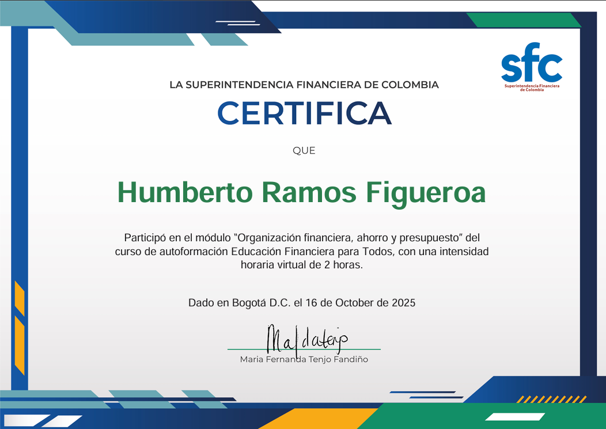
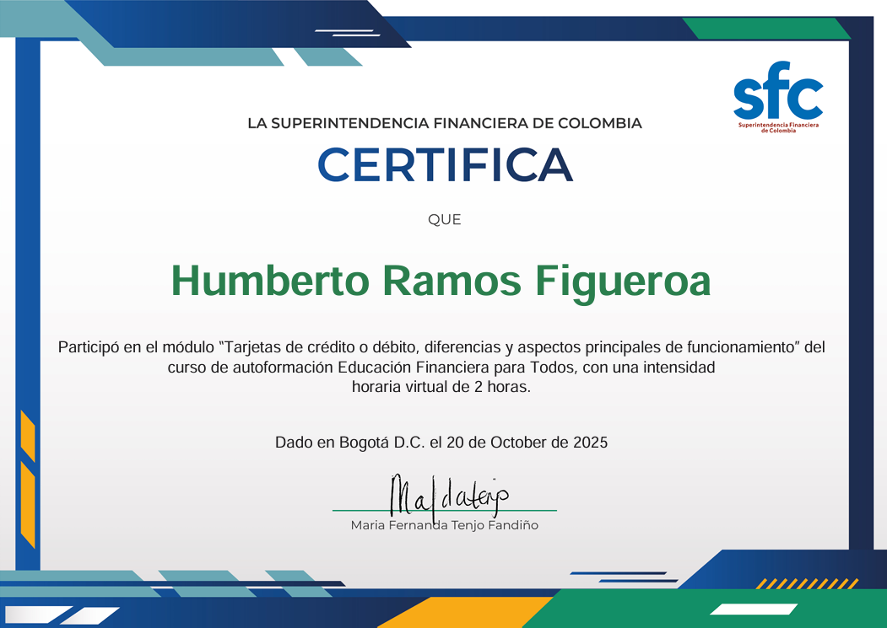

El ahorro es la porción de los ingresos que no se destina al consumo inmediato y se reserva para el futuro. Representa una decisión consciente de posponer el gasto presente con el objetivo de contar con recursos disponibles para emergencias, metas específicas o inversiones futuras. El ahorro es fundamental para construir estabilidad financiera y alcanzar objetivos a mediano y largo plazo.
La mejor alternativa para ahorrar depende de los objetivos personales, el horizonte temporal y el perfil de riesgo de cada persona. Entre las opciones más recomendadas se encuentran: cuentas de ahorro tradicionales para liquidez inmediata, CDTs o bonos para plazos definidos con mayor rentabilidad, fondos de inversión para diversificación, y el método de ahorro automático que permite apartar un porcentaje fijo del ingreso antes de realizar cualquier gasto.
El presupuesto es una herramienta de planeación financiera que permite organizar, controlar y proyectar los ingresos y gastos durante un período determinado. Es un plan detallado que ayuda a tomar decisiones informadas sobre cómo asignar los recursos disponibles, priorizar necesidades y evitar el sobreendeudamiento.

Una tarjeta de crédito es un instrumento financiero emitido por una entidad bancaria que permite realizar compras y disponer de dinero hasta un límite preestablecido, sin necesidad de tener fondos propios en el momento de la transacción. Funciona como un préstamo renovable que debe ser pagado en una fecha establecida. Sirve para facilitar compras, diferir pagos, acceder a beneficios y construir historial crediticio.
Una tarjeta de débito es un medio de pago vinculado directamente a una cuenta bancaria, que permite realizar transacciones utilizando únicamente el dinero disponible en dicha cuenta. A diferencia del crédito, no permite gastar más de lo que se tiene. Sirve para realizar compras, retirar efectivo en cajeros automáticos, hacer pagos en línea y transferencias, todo con fondos propios.